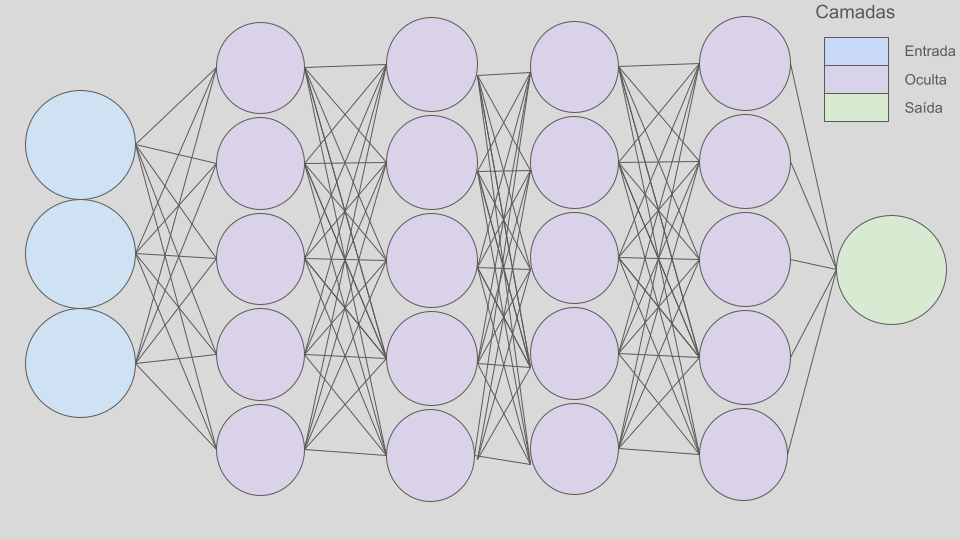
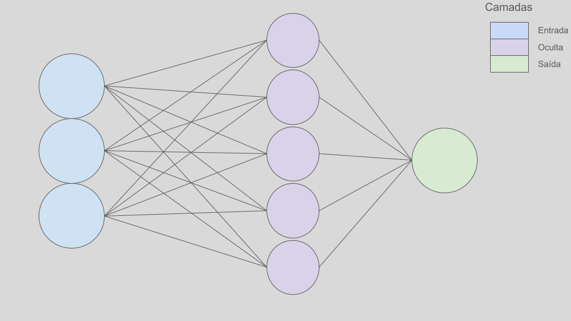
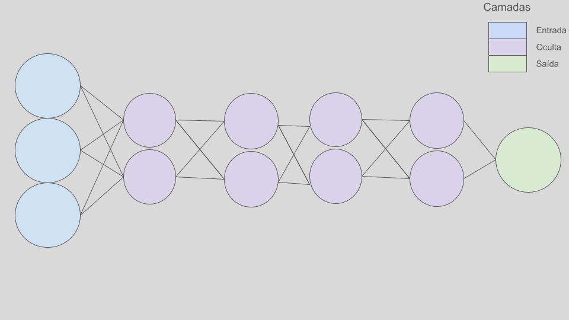
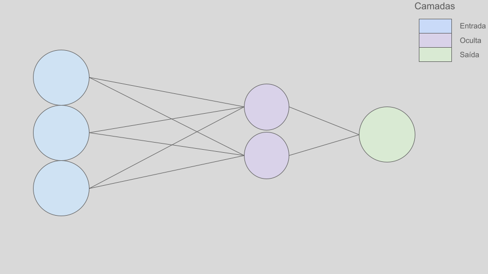
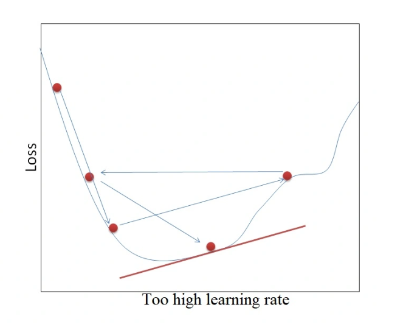

3 Hiperparâmetros e Otimização
4 Introdução
Imagine que você é Marty McFly e precisa voltar para 1985 usando o DeLorean. Mas há um detalhe crucial: a viagem no tempo só funciona se o Capacitor de Fluxo estiver perfeitamente ajustado. A quantidade exata de 1,21 gigawatts de energia deve ser aplicada no momento certo, e a velocidade do carro precisa atingir precisamente 88 milhas por hora.
Se a energia for insuficiente, a viagem não acontece. Se for excessiva, o DeLorean pode se perder no tempo. Esse é o mesmo dilema que enfrentamos ao ajustar os hiperparâmetros de uma rede neural.
Assim como Doc Brown precisa configurar corretamente os elementos da máquina do tempo para evitar desastres temporais, precisamos afinar os hiperparâmetros para garantir que o modelo aprenda bem sem colapsar no caos do overfitting.
Os hiperparâmetros são valores definidos antes do treinamento de uma rede neural. Diferente dos parâmetros internos (como pesos e vieses), que são ajustados durante o aprendizado, os hiperparâmetros devem ser fixados antes do treinamento. Assim como um parametro padrão, um hiperparamertro deve ser otimizado a um valor otimo, aquele valor que entrega o melhor desempemho a um modelo neural. No caso, essa otimização possui um nome específico: hypertuning
A principal diferença entre otimização e hypertuning (ajuste de hiperparâmetros) está no foco de cada processo dentro do treinamento de modelos de aprendizado de máquina.
[ \[\begin{array}{|l|l|l|} \hline \textbf{Aspecto} & \textbf{Otimização} & \textbf{Hypertuning (Ajuste de Hiperparâmetros)} \\ \hline \textbf{O que ajusta?} & Parâmetros do modelo (ex: pesos e vieses da rede neural). & Hiperparâmetros (ex: taxa de aprendizado, número de camadas, número de neurônios). \\ \hline \textbf{Quando ocorre?} & Durante o treinamento do modelo. & Antes do treinamento do modelo. \\ \hline \textbf{Como é feito?} & Algoritmos como descida do gradiente ajustam os parâmetros para minimizar a função de perda. & Métodos como Grid Search, Random Search, Otimização Bayesiana testam diferentes combinações de hiperparâmetros. \\ \hline \textbf{Objetivo} & Encontrar os melhores pesos para que o modelo aprenda com os dados. & Encontrar os melhores hiperparâmetros para que a otimização do modelo seja eficiente. \\ \hline \end{array}\]]
5 Principais Hyperparãmetros
Ainda tratando de redes Feedforward, o modelo neural apresentado no capítulo anterior é um dos mais simples de se utilizar. Embora seja uma das arquiteturas mais básicas, ele apresenta um número significativo de hiperparâmetros quando comparado a modelos de regressão mais complexos, como MLGs (Modelos Lineares Generalizados), GAMs (Modelos Aditivos Generalizados) e GAMLSSs (Modelos Aditivos Generalizados para Distribuições Localmente Específicas).
Esses hiperparâmetros podem ser classificados em três segmentos principais:
- Alterando a Estrutura da Rede:
- Número de camadas: Define a profundidade da rede.
- Número de neurônios por camada: Determina a quantidade de unidades de processamento em cada camada.
Alterando as Conexões entre Neurônios: - Função de ativação: Controla como as saídas dos neurônios são transformadas, influenciando a capacidade do modelo de aprender não-linearidades.
Alterando o Processo de Aprendizado do Modelo: - Taxa de aprendizado(\(\alpha\)): Define o tamanho do passo que o modelo dá ao ajustar os pesos durante o treinamento. - Número de épocas (Epochs): O número de vezes que o modelo passa por todo o conjunto de dados durante o treinamento. - Tamanho do lote (Batch Size): Quantos exemplos de treinamento são usados para calcular o gradiente antes de atualizar os pesos.
A listagem acima apresenta os principais hiperparâmetros, mas vale ressaltar que qualquer valor fixado antes da etapa de treinamento do modelo, e que tenha seu valor ótimo encontrado através de um método de otimização, pode ser considerado um hiperparâmetro. Ou seja, qualquer parâmetro ajustado manualmente ou automaticamente para maximizar o desempenho do modelo, antes de começar o treinamento, é classificado como um hiperparâmetro.
6 Lidando com os principais Hyperparametros
7 Número de Camadas e Neuronios
- Rede Ampla e Profunda (Muitos nós e camadas)

- Rede Ampla e Rasa (Muitos nós e poucas camadas)

- Rede Estreita e Profunda (Poucos nós e muitas camadas)

- Rede Estreita e Rasa (Poucos nós e poucas camadas)

7.1 Taxa de Aprendizado
Taxa de aprendizado ou learing rate é um hiperparametro que controla a magnitude na atualização dos valores dos pesos e vieses.
Como demonstramos no ultimo capítulo, um determinado peso \(w\) tem o seu valor atualizado a cada iteração do gradiente descente da seguinte forma
\[w^+ = w - \alpha \frac{\partial E_{total}}{\partial w}\] O hiperparamtero \(\alpha\) é a taxa de aprendizado, e é um multiplicador do valor a ser atualizado.

Vemos pela figura que para valores menores que o adequado, o modelo leva muitas iterações, e consequentemente tempo, para encontrar o ponto de mínimo global da função de custo
Já para valores maiores que o adequado, o modelo não encontra o ponto de minimo global, utilizando pontos de mínimos globais como ponto de parada
